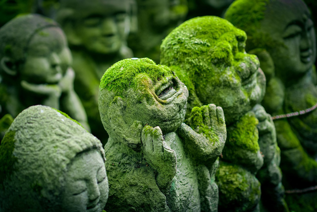
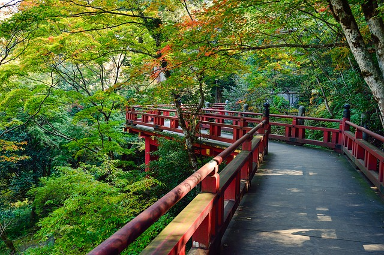

Kyoto: Center of the Japanese History
Kyoto (京都, Kyōto) served as Japan's capital and the emperor's residence from 794 until 1868. It is now the country's seventh largest city with a population of 1.4 million people and a modern face.
Over the centuries, Kyoto was destroyed by many wars and fires, but due to its historic value, the city was dropped from the list of target cities for the atomic bomb and spared from air raids during World War II. Countless temples, shrines and other historically priceless structures survive in the city today.
Kinkakuji Temple
Kinkaku-ji (金閣寺, literally "Temple of the Golden Pavilion"), officially named Rokuon-ji (鹿苑寺, literally "Deer Garden Temple"), is a Zen Buddhist temple in Kyoto, Japan. It is one of the most popular buildings in Japan, attracting a large number of visitors annually. It is designated as a National Special Historic Site and a National Special Landscape, and it is one of 17 locations making up the Historic Monuments of Ancient Kyoto which are World Heritage Sites.
The site of Kinkaku-ji was originally a villa called Kitayama-dai (北山第), belonging to a powerful statesman, Saionji Kintsune. Kinkaku-ji's history dates to 1397, when the villa was purchased from the Saionji family by Shogun Ashikaga Yoshimitsu, and transformed into the Kinkaku-ji complex. When Yoshimitsu died, the building was converted into a Zen temple by his son, according to his wishes.
Kyoto Imperial Palace
The Kyoto Imperial Palace (京都御所 Kyoto-gosho) is the former ruling palace of the Emperor of Japan. The Emperors have since resided at the Tokyo Imperial Palace after the Meiji Restoration in 1869, and the preservation of the Kyoto Imperial Palace was ordered in 1877.
The Kyoto Imperial Palace is the latest of the imperial palaces built at or near its site in the north-eastern part of the old capital of Heian-kyō after the abandonment of the larger original Heian Palace (大内裏 Dai-dairi) that was located to the west of the current palace during the Heian Period. The Palace lost much of its function at the time of the Meiji Restoration, when the capital functions were moved to Tokyo in 1869. However, the Taishō and Shōwa Emperors still had their enthronement ceremonies at the palace.